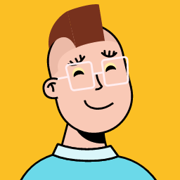

S

AI
My Dashboard
North Wind
Performance
$284
Spend
212
Generated
$0.42
Cost / sec
My projects
Aurora · 9/39
Lumen · 3/14
Halcyon · done
My Inspiration
My Knowledge Hub
Night exterior light: mood without noise
Featured today
Character consistency across scenes
For your Lumen scenes
Why generation retries went up
Seen in Aurora this week
1
A
A
A
Anna
· Director
Sent Hero-shot · Take 4 back — needs a lighting pass
Retake
14:22
Hero-shot · Take 4
Scene 3
·
North Wind
Anna's note
Lighting reads flat — no separation from the back wall. Push a warm key from camera-left and add a soft rim so the silhouette pops.
Jump to rework
See the take
14:22
A
Anna
· Director
Approved Establishing · Take 2
Approved
Yesterday
Establishing · Take 2 approved
Scene 1
·
North Wind
See it
Knowledge Hub
On flat lighting — a fix for the retake
Tip
On flat lighting — a fix from the KB
Anna's note points to a separation issue. The
Warm-key + rim
recipe in the reference book matches this exactly.
Open recipe